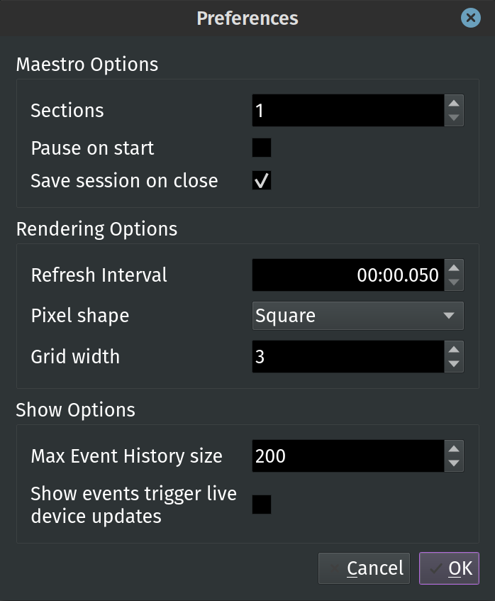

Preferences¶
The Preferences dialog lets you change several options in PixelMaestro Studio.
{kind=link}
To open the Preferences dialog, click Edit > Preferences.
Note: Some settings will require you to relaunch PixelMaestro Studio (or just load a new Maestro) before applying.
Maestro Options¶
The Maestro Options let you configure the behavior of the Maestro and PixelMaestro Studio.
Sections¶
Sections sets the number of Sections assigned to the Maestro. Sections are displayed in the top half of the main window in order from left to right.
Pause on Start¶
When checked, Pause on start automatically opens the Maestro in a paused state. This is useful if you want to create a Show from scratch, but don’t want the timer running in the background. You can resume playback at any time by clicking the play/pause button in the center of the window.
Save Session on Close¶
Save session on close saves your Maestro configuration when you exit PixelMaestro Studio. This configuration is automatically loaded the next time you open the program.
Rendering Options¶
Rendering Options control how the Maestro is displayed on the screen.
Pixel Shape¶
Pixel shape changes the shape of each individual pixel.
Tip: For best performance, set the pixel shape to Square.
Refresh Interval¶
The Refresh Interval is the amount of time (in milliseconds) between Maestro refreshes. A lower refresh interval provides smoother animations at the cost of increased CPU usage.
Show Options¶
Show Options control how Shows behave. These options apply mostly to the Show tab.
Max Event History Size¶
The maximum number of events to store in the Event History. This is useful when creating and editing Shows.
Events Trigger Live Device Updates¶
When enabled, Events that run in the Show tab also trigger live updates for any connected devices that have live updates enabled. This lets you run Show Events on a device without having to run a Show on the device itself, essentially using PixelMaestro Studio as a remote scheduler.